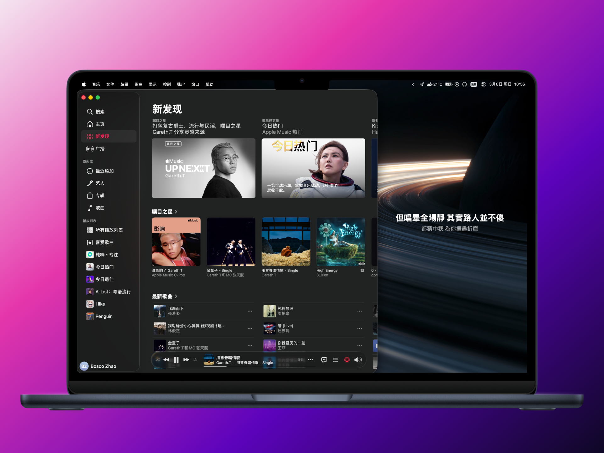

告别生硬切换。深度定制的弹簧物理动画，让新旧歌词像瀑布一样顺滑交替，极具果冻质感。
完全遵守苹果最新设计规范，无论白天还是黑夜，程序坞图标与歌词投影都能与系统主题完美共鸣。
全面兼容 Apple Music 与 Spotify，无需繁琐设置，只要音乐响起，歌词便如约而至。
支持 macOS 13.0 及以上版本 (Apple Silicon & Intel)
立即下载 FloatingLyric.dmg由于本软件为独立开发者提供的免费作品，暂未向苹果缴纳开发者认证费，macOS 的安全机制可能会误报“文件已损坏”。请按照以下步骤解除隔离即可永久正常使用：
xattr -cr /Applications/FloatingLyric.app